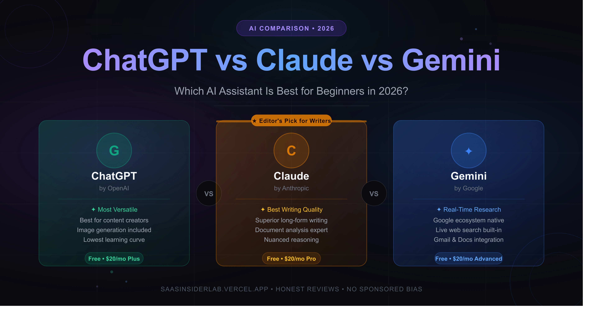

1. Introduction
If you have spent any time online in the past year or two, you have probably noticed that AI assistants are everywhere. From drafting emails to summarizing research papers to writing entire blog posts, tools like ChatGPT, Claude, and Gemini have quietly become part of how millions of people work every single day.
In 2026, using one of these tools is no longer a tech-savvy curiosity. It is practically expected. Freelancers use them to speed up projects. Small business owners lean on them to handle content and communication. Solopreneurs use them to get more done without hiring extra help. And beginners are often the ones staring at three tabs open, completely unsure where to even start.
That confusion is understandable. ChatGPT, Claude, and Gemini all promise to make your life easier, but they each have a distinct personality, a different set of strengths, and a different experience that you will quickly notice once you actually start using them. This guide is not going to throw spec sheets at you. It is based on real, hands-on use across writing, research, brainstorming, and everyday productivity tasks — and it is going to tell you honestly which one is worth your time depending on who you are.
2. What Is ChatGPT?
ChatGPT, built by OpenAI, is the tool that most people think of when they hear the words "AI assistant." It was the one that started the mainstream conversation, and in 2026, it still has the largest user base and one of the most polished overall experiences.
What It Does Best
ChatGPT is a genuinely well-rounded assistant. It handles a wide range of tasks with confidence, from writing marketing copy to generating code to walking you through a complicated topic step by step. The interface is clean, responsive, and requires very little explanation to get started with. You type something, it responds. There is almost no learning curve for casual use.
For content creation, ChatGPT performs reliably. It can write a blog post outline, draft a product description, repurpose your ideas into social captions, and help you punch up weak paragraphs. The tone is adaptable, and if you give it clear direction, the output is usually solid on the first attempt.
Research-wise, ChatGPT with web browsing enabled — available in the paid plan — is a useful starting point for gathering background information. It can search the web, pull in current context, and summarize findings. That said, like all AI tools, it is not a replacement for verifying facts through primary sources.
Ease of Use for Beginners
Very high. The interface is intuitive, the conversation flow feels natural, and OpenAI has built in a lot of guidance for new users. The mobile app is also well designed, which matters a lot if you use your phone more than your laptop.
Pricing Overview
ChatGPT offers a free tier that gives you access to GPT-4o with some usage limits. The paid plan, ChatGPT Plus, is around $20 per month and unlocks higher usage limits, web browsing, image generation, and access to GPT-4o and newer models as they roll out.
3. What Is Claude?
Claude is built by Anthropic, and it has developed a strong reputation among writers, researchers, and anyone who needs to work with long or complex documents. Where ChatGPT often feels like a confident generalist, Claude feels more like a careful, thoughtful collaborator.
What It Does Best
Claude's biggest strength is long-form writing and nuanced reasoning. If you need to write something that actually sounds human — whether that is a detailed article, a structured report, or a lengthy email thread — Claude tends to produce output that reads more naturally and with fewer of the telltale AI-isms that make content feel robotic.
It also handles document analysis exceptionally well. You can drop in a long PDF, a dense contract, a research paper, or even a messy set of notes, and Claude will read it, summarize it, and answer questions about it with impressive accuracy. For anyone who works with lots of written material, this alone makes it worth trying.
Where Claude Outperforms ChatGPT
When the task involves writing quality over writing speed, Claude often wins. The responses feel less formulaic, more considered. It is also more likely to push back politely when a request seems unclear or when it is uncertain about something, which can actually be a feature when you need reliable output rather than just fast output.
Claude also handles very long inputs better than most competitors, which matters if you are working with large files or need to paste a lot of context into a single conversation.
Pricing Overview
Claude has a free tier that gives you access to Claude Sonnet with reasonable usage limits for everyday tasks. The Pro plan is around $20 per month and unlocks Claude's most capable model, higher message limits, and priority access during busy periods.
4. What Is Gemini?
Gemini is Google's AI assistant, and its biggest differentiator is right there in who built it. If your life runs on Google — whether that means Gmail, Google Docs, Google Drive, or Google Search — Gemini fits into that ecosystem in a way that neither ChatGPT nor Claude currently does.
What It Does Best
Gemini is strongest when you need up-to-date information. Because it is deeply integrated with Google Search, it tends to surface current data more reliably than tools that only use training data. For research-heavy tasks, especially anything involving recent events, product comparisons, or fast-moving topics, Gemini often provides more timely answers.
The Google Workspace integration is genuinely useful. You can ask Gemini to draft an email directly in Gmail, summarize a document in Google Docs, or pull relevant data from your Drive files. For solopreneurs and small business owners who already live in Google's ecosystem, this kind of built-in productivity boost is hard to ignore.
Where Gemini Outperforms ChatGPT and Claude
Real-time information is the clearest win. Gemini also tends to perform better for tasks that require pulling information across multiple sources simultaneously. The integration with Google products is also a legitimate advantage that the other two tools cannot easily replicate without third-party workarounds.
Pricing Overview
Gemini has a free tier with access to its capable standard model. Gemini Advanced, which gives you access to the more powerful Gemini Ultra model, is available through Google One AI Premium for around $20 per month. That subscription also includes additional Google One storage and access to Gemini in Workspace apps.
5. ChatGPT vs Claude vs Gemini: Feature Comparison
Here is a practical breakdown based on real-world use rather than marketing language. All three tools are genuinely capable in 2026 — the question is less about which one is objectively better and more about which one fits your specific workflow.
| Feature | ChatGPT | Claude | Gemini |
|---|---|---|---|
| Ease of Use | Excellent | Very Good | Good |
| Writing Quality | Very Good | Excellent | Good |
| Research Capability | Good (w/ browse) | Good | Excellent |
| Accuracy | Good | Very Good | Good (live data) |
| Creativity | Excellent | Very Good | Good |
| Productivity Workflows | Very Good | Good | Excellent (Google) |
| Learning Curve | Very Low | Low | Low |
| Free Plan Value | Good | Good | Good |
| Paid Plan Value | Strong | Strong | Strong + Storage |
| Best for Beginners | Yes | Yes | Yes (Google users) |
| Best for Freelancers | Strong | Strong | Moderate |
| Best for Creators | Strong | Strong | Moderate |
| Best for Small Biz | Strong | Strong | Strong (Google WSP) |
6. Real-World Beginner Use Cases
Writing Blog Posts
For blog writing, ChatGPT and Claude are neck and neck, with a slight edge to Claude when you want the output to sound less generic. ChatGPT is faster to get started with and responds well to style direction. Claude tends to produce more natural prose, especially on the first pass. If you're specifically looking for free writing-focused tools, check out our guide on Best Free AI Writing Tools (Tested Without a Credit Card).
Writing Emails
All three handle email drafting well. Gemini has the advantage of working directly inside Gmail, which saves a copy-paste step. For standalone email writing, ChatGPT is very fast and reliable. Claude is the go-to if you need the email to have a warmer or more considered tone.
Learning New Skills
ChatGPT is particularly good for learning because it explains concepts clearly, adjusts to your level of knowledge, and lets you ask follow-up questions in a very conversational way. If you tell it you are a complete beginner on a subject, it genuinely adjusts its explanations. Claude is also excellent for this. Gemini works well here too, especially when you want current information alongside the explanation.
Summarizing PDFs and Documents
Claude is the clear winner for this. Drop in a long document and ask specific questions about it, and Claude handles it with more accuracy and nuance than the others in most cases. ChatGPT handles this well too, but if document analysis is your primary use case, Claude earns its subscription.
Researching Topics
Gemini wins when you need the most current information. ChatGPT with browsing enabled is a close second. For research that does not require live data, all three are reasonably capable, but always verify key claims through primary sources regardless of which tool you use.
Creating Social Media Content
ChatGPT is excellent for social media content. It understands platform conventions, adapts tone for different audiences, and can produce a batch of post variations quickly. Claude also does this well, particularly for longer captions or brand-voice content. Gemini is competent but slightly less creative in this area based on practical use.
Brainstorming Business Ideas
All three are good brainstorming partners. ChatGPT tends to generate a high volume of ideas quickly, which is great for initial exploration. Claude is better at drilling into a specific direction with more nuanced suggestions. For solopreneurs looking to map out ideas comprehensively, it helps to have the right broader toolkit — the guide on best AI tools for solopreneurs covers how these assistants fit into a wider productivity stack.
Improving Productivity
Gemini has the edge for productivity if your workflow is Google-centric. ChatGPT has a strong ecosystem of integrations and plugins. Claude is the most focused on deep-work tasks like writing and analysis. Your best productivity AI is the one that plugs into where you already spend your time.
7. Honest Limitations
No AI assistant is perfect, and it would not be a fair AI assistant comparison without addressing where all three fall short.
All three can and do hallucinate. This means they will sometimes state incorrect information with total confidence. Dates, statistics, names, technical details — these are all areas where you should verify rather than trust blindly. This is not a deal-breaker, but it is something every user needs to internalize early.
Context limitations are real. While all three have expanded their context windows significantly, very long conversations can still lead to the model losing track of earlier details. For complex, multi-part projects, you may need to refresh the context periodically.
Free plans have limits. All three offer usable free tiers, but if you start relying on these tools heavily, you will likely hit message caps or find yourself locked out of the most capable model versions. The $20 per month paid plans are fairly priced given the value, but it is a real cost to factor in if you are on a tight budget.
None of these tools should replace critical thinking or expert consultation. They are research starting points, writing assistants, and productivity accelerators. They are not lawyers, doctors, or certified financial advisors, and using them as such is risky.
8. Who Should Choose ChatGPT?
ChatGPT is the strongest choice if you want the most versatile AI assistant with the broadest range of integrations, plugins, and community resources. If you are a content creator who needs to move fast, a freelancer working across many different types of projects, or someone who wants a single AI tool that can handle almost anything reasonably well, ChatGPT is a reliable starting point.
It is also the best choice if image generation matters to you, since ChatGPT includes DALL-E access in the paid tier. And if you are learning to use AI for the first time, the sheer volume of tutorials, prompt guides, and community knowledge around ChatGPT makes getting started easier than with the alternatives. If you're planning to use ChatGPT for client work, blogging, or content creation, you may also find our guide on How to Use ChatGPT for Freelance Writing helpful. It covers a practical workflow for research, outlining, drafting, editing, and client communication using ChatGPT.
9. Who Should Choose Claude?
Claude is the best choice for anyone who prioritizes writing quality, document analysis, or nuanced reasoning. If you are a writer who wants an AI that produces output that actually sounds like a person wrote it, Claude is worth the subscription. If you regularly work with long documents, reports, contracts, or research papers and need to extract insights efficiently, Claude handles this better than the alternatives.
It is also a particularly good fit for anyone working on longer-form projects where the context needs to remain coherent across many paragraphs. Claude is thoughtful in a way that feels genuinely different from the others, and for certain types of work, that distinction matters.
10. Who Should Choose Gemini?
Gemini is the obvious choice if your workflow runs on Google. If you live in Gmail, Google Docs, Google Sheets, and Google Drive, Gemini's native integration removes friction in a way that no other tool currently matches. You are not copying and pasting between tabs. The AI is right there in the tools you already use.
It is also the best option for anyone who relies on current, real-time information. Journalists, researchers, and small business owners who need to stay on top of fast-moving topics will appreciate the tight Google Search integration. And for anyone subscribed to Google One already, the AI Premium upgrade is a compelling bundle.
11. Which AI Assistant Should Most Beginners Start With in 2026?
If you are starting from zero and just want one tool that will serve you well across a wide range of everyday tasks, start with ChatGPT. The free tier is genuinely useful, the interface is the most approachable, and the amount of existing guidance available means you will never be stuck for long. It is the most forgiving place to learn what AI can and cannot do.
Once you have a sense of how you actually use AI day-to-day, that is when it makes sense to try Claude or Gemini. If writing quality matters most to you, upgrade to Claude. If Google productivity is your world, Gemini is the natural next step.
The reality in 2026 is that all three tools are strong, all three have free options worth exploring, and the best AI assistant is simply the one that fits your workflow. You do not need to pick just one forever. Start with ChatGPT, explore the others, and let your actual use cases guide you.
Conclusion
Choosing between ChatGPT, Claude, and Gemini does not have to be a stressful decision. Think of it this way: ChatGPT is the versatile all-rounder that is easiest to pick up, Claude is the thoughtful writer and document analyst, and Gemini is the productivity powerhouse for the Google-native user. All three are capable. All three have free plans worth testing. The best move you can make as a beginner is to just start using one, learn what it can do, and let your real experience guide you from there.
12. Frequently Asked Questions
ChatGPT tends to have a slightly lower learning curve for absolute beginners because of its polished interface and the large community of tutorials and guides that exist around it. That said, Claude is also easy to use and may be a better fit for beginners who plan to do a lot of writing or document analysis. Both are worth trying on their free plans before committing to either.
Yes, Gemini has a free tier that gives you access to Google's capable standard model. The paid tier, Gemini Advanced, is available through a Google One AI Premium subscription for around $20 per month and unlocks the more powerful Ultra model along with deeper Workspace integrations for Gmail, Docs, and Drive.
ChatGPT and Claude are both strong choices for freelancers depending on the nature of the work. ChatGPT is excellent for versatility across many project types, quick content generation, and creative tasks. Claude is the better choice for freelancers whose work is heavily writing or research-focused, or who regularly work with long documents. Gemini is most useful for freelancers already embedded in the Google ecosystem.
Not entirely, and it would be a mistake to treat them as direct replacements. AI assistants are excellent for synthesizing information, generating content, and explaining concepts, but they can produce inaccurate information and their training data has cutoff dates. For finding specific sources, verifying facts, or accessing current news, traditional search engines remain an important complement to AI tools.
At around $20 per month, all three paid plans offer strong value. ChatGPT Plus gives you access to the most versatile feature set including image generation. Claude Pro is the best value if writing quality and document analysis are your priorities. Gemini Advanced bundles well if you already pay for Google One storage. If you are on a budget, testing all three free tiers first is the most sensible approach.